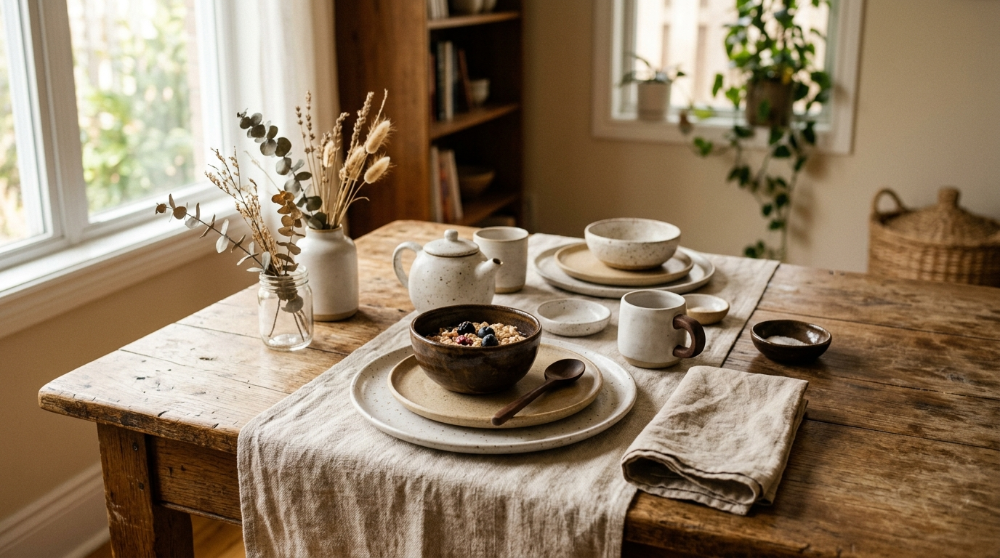
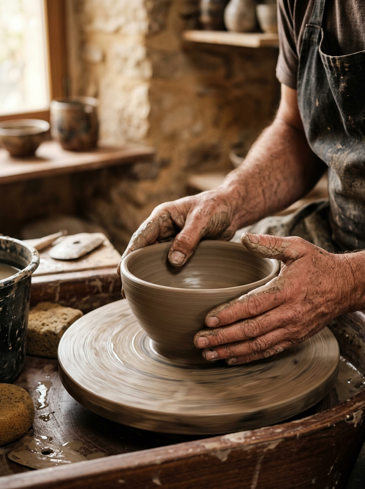
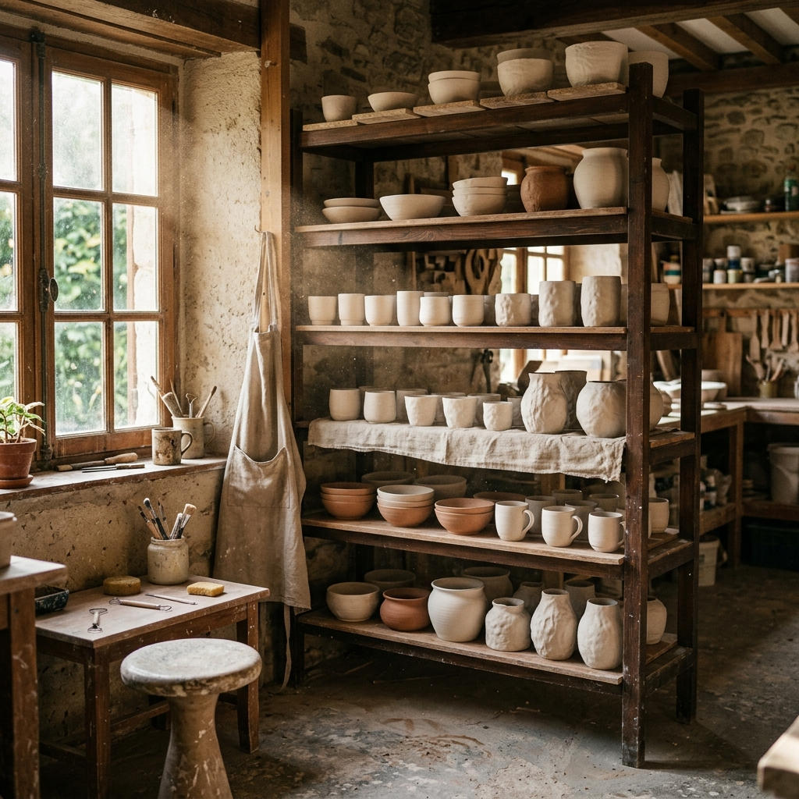
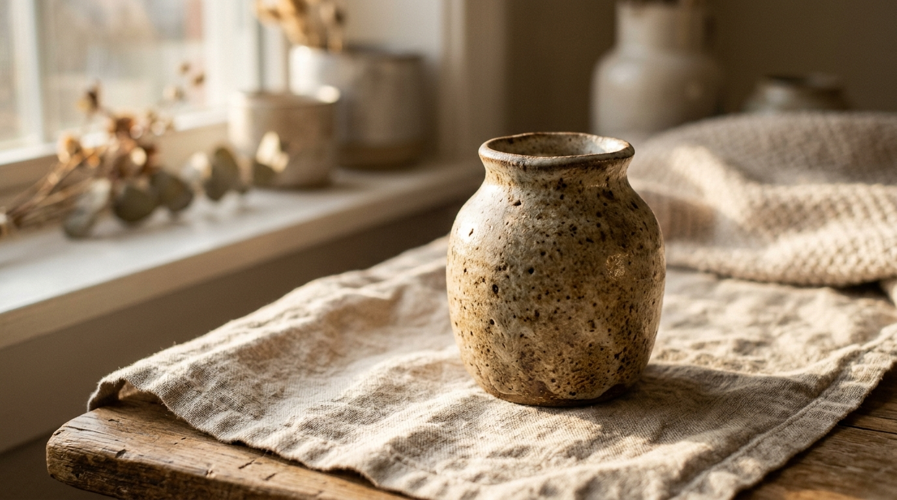

01. Tinh tuyển Đất
Khởi đầu từ những thớ đất thô mộc, được chọn lọc kỹ càng để đảm bảo độ bền và màu sắc tự nhiên nhất sau khi nung.

Quiet Beauty, Lasting Meaning
01 — Khởi nguồn & Sứ mệnh
Đất vốn bình dị, nằm sâu trong lòng quê hương, tưởng như vô tri và thô mộc. Nhưng qua đôi bàn tay của người nghệ nhân, đất được nhào nặn, tạo hình và thổi vào đó một dáng hình, một công năng, một vẻ đẹp riêng. Từ một nắm đất nguyên sơ, có thể trở thành một chiếc bình, một chiếc đĩa, một món đồ trang trí hay một vật dụng hiện diện trong đời sống mỗi ngày.
Điều khiến tôi yêu gốm không chỉ nằm ở vẻ đẹp của nó, mà ở hành trình biến đổi ấy — từ đất thành hình, từ bàn tay thành giá trị, từ một vật vô tri thành một món đồ có thể lưu giữ cảm xúc và ký ức.
“Với tôi, một món quà bằng gốm không đơn thuần là một vật phẩm để trao tặng. Đó là một món quà mang theo dấu vết của đất, của bàn tay người làm, của thời gian và của người trao gửi.”
Một món quà từ nguồn cội — để lưu dấu một khoảnh khắc, một tình cảm, một câu chuyện.
Và có lẽ, đó cũng là điều tôi muốn HEDY ATELIER kể lại qua từng sản phẩm: những giá trị mộc mạc của đất, được nâng niu bằng đôi bàn tay con người, để trở thành những món đồ đẹp đẽ và có ý nghĩa trong đời sống.

Dấu vết của đất và bàn tay người làm trong từng sản phẩm
02 — Chế tác

Khởi đầu từ những thớ đất thô mộc, được chọn lọc kỹ càng để đảm bảo độ bền và màu sắc tự nhiên nhất sau khi nung.
Mỗi tác phẩm đều mang dấu ấn riêng của đôi bàn tay người thợ. Không có hai món đồ nào hoàn toàn giống nhau.
Sự biến đổi kỳ diệu trong lò nung tạo nên những vết vân, đốm màu độc bản — minh chứng của nghệ thuật thủ công.

04 — Cam kết
Mọi công đoạn từ nhào đất, vuốt cốt đến tráng men đều được thực hiện với sự cẩn trọng cao nhất, mang trọn tâm huyết của người làm.
Thiết kế tinh giản, không chạy theo xu hướng nhất thời, để mỗi sản phẩm đều giữ nguyên giá trị qua nhiều năm tháng sử dụng.
Trân trọng nguồn nguyên liệu tự nhiên, tối ưu hóa quy trình sản xuất và bao bì thân thiện để giảm thiểu tác động đến môi trường.